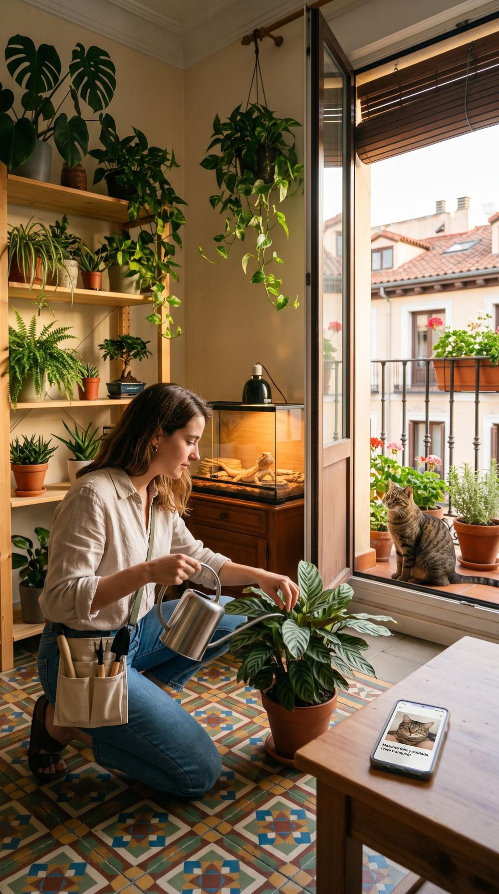

Arquetipos y buyer personas
Marta, Pablo, Álex, Laura… cada uno con su peso en el mercado, su gasto y lo que le preocupa.
Ver personas →Proyecto final del curso
Impartido por La Nave Nodriza de la mano de Cloud District
Cuidadores de barrio que saben de plantas y de animales, también de los exóticos. De la investigación a una POC que funciona, construido de principio a fin con IA.

01El proceso
Cada fase la hicieron dos IAs en paralelo, ChatGPT y Claude. Luego se compararon los resultados y se unificaron en una sola versión. Este índice sigue el mismo orden.
Mercado sintético, arquetipos, personas y focus group simulado.
Nicho, ciudad, modelo de negocio, fases y métricas para decidir si se sigue.
Revisión crítica de los entregables de las dos IAs y de lo que ninguna demuestra.
Fusión de las dos guías en un sistema visual único.
Web de captación del piloto, honesta con lo que aún no existe.
Requisitos de la v1, reglas de negocio, modelo de datos y analítica.
Pantallas y comunicaciones del producto.
Área privada de dueños y cuidadores que funciona de verdad, de principio a fin.
Herramienta para moderar pruebas con personas reales y medir cada tarea.
02Investigación
Se generó un marketplace sintético de cuidado de mascotas y plantas en España. A partir de él salieron los arquetipos de dueño y de cuidador y un focus group simulado. El objetivo no era validar nada, sino saber qué habría que preguntar a personas reales.
Los datos son sintéticos: reflejan los supuestos con los que se generaron, no el mercado real. Por eso todo lo que concluyen está marcado «por validar».
Marta, Pablo, Álex, Laura… cada uno con su peso en el mercado, su gasto y lo que le preocupa.
Ver personas →Guion de moderación reutilizable y lo que dijeron los participantes simulados.
Ver insights →Paneles interactivos sobre mascotas, plantas, temporada y cobertura por barrio.
Ver radar →03Estrategia
La investigación se convirtió en decisiones: a quién servir primero, dónde empezar, cuánto cobrar y qué cifras deciden si el proyecto sigue adelante.
04GPT frente a Claude
Las mismas tareas, dos resultados muy distintos. Compararlos ayudó a decidir qué quedarse de cada uno y, sobre todo, qué no está demostrado aunque lo parezca.
Un investigador prudente
Un estratega que toma decisiones
La estrategia de Claude como columna vertebral, con el guion de moderación de GPT y su criterio de no prometer lo que aún no existe.
05Marca y guía de estilo
Un solo color de marca, la lavanda, y dos de apoyo con significado: savia para lo botánico y azafrán solo para el calor. Nada de huellas ni corazones: plantas y animales pesan lo mismo.
Aa
Bricolage GrotesqueTitulares
Aa
Instrument SansLectura
18:04
IBM Plex MonoDatos: horas, °C, precios
«Vete tranquilo, en casa todo sigue vivo.»
06Web pública
La web de captación del piloto en Madrid. Cuenta qué es Todo Sigue Vivo con un parte del día animado, un configurador de tu casa y el aviso de ola de calor. Lo que aún no existe lleva su estado visible.
07PRD y arquitectura
El documento de producto define los públicos, los requisitos con código para cada parte del servicio, las reglas de negocio, el modelo de datos y los eventos de analítica. La arquitectura propone cómo construir el MVP.
08Prototipos en Figma
Prototipos navegables en Figma. Se abren en una pestaña nueva y se recorren pulsando, como el producto real.
Las comunicaciones por correo del servicio.
Colores, tipografía y componentes de Todo Sigue Vivo, listos para diseñar.
09POC funcional
Una prueba de concepto que se puede usar de verdad desde los dos lados: Marta publica el cuidado de su casa y Irene, cuidadora, recibe el aviso, se presenta y chatea con ella. Llega hasta la visita con su parte del día y la reseña.
Los datos son de ejemplo y se guardan solo en tu navegador.
10Sala de test de usuario
Una sala para moderar pruebas de usabilidad sin montar nada más. La persona participante usa un móvil y quien modera lleva el otro, con los dos lados del servicio a la vez. Cada clic, cada tiempo y cada respuesta quedan registrados para analizarlos después.
Código de participante, rol y punto de partida listo en un clic: desde cero hasta la reserva terminada.
Seis tareas por rol. Se marca si la persona lo logra sola, con ayuda o no lo consigue.
Al acabar cada tarea, la persona recibe en su móvil una escala del 1 al 7 y «¿qué esperabas que pasara?».
Notas, registro de eventos y descarga en CSV para abrir en Excel o Google Sheets.
Quien modera puede provocar situaciones difíciles de reproducir: que un cuidador se presente, que nadie responda en 12 horas, una ola de calor o una visita completa con su parte.
11Hecho con IA
La investigación, la estrategia, la marca, la web, el PRD, los prototipos, la POC y la sala de test se hicieron con ChatGPT, Claude, Claude Code y Figma, con criterio humano en cada decisión. Las imágenes son ilustrativas, están creadas con IA y no son perfiles reales.
12Agradecimientos
Este proyecto nace de 16 horas de formación y práctica en las que aprendimos haciendo. Gracias a Clara y a Carlos por compartir con tanta generosidad lo que saben de IA y por traernos cada novedad casi en tiempo real, según iba apareciendo.
Artificial Intelligence Researcher
LinkedIn ↗Lead of Product Design Team · Cloud District
LinkedIn ↗Salimos con más conocimiento, más confianza y la sensación de que ahora sí podemos construir un producto digital de principio a fin.
Proyecto final · «Cómo construir un producto digital con IA» · La Nave Nodriza de la mano de Cloud District · 2026